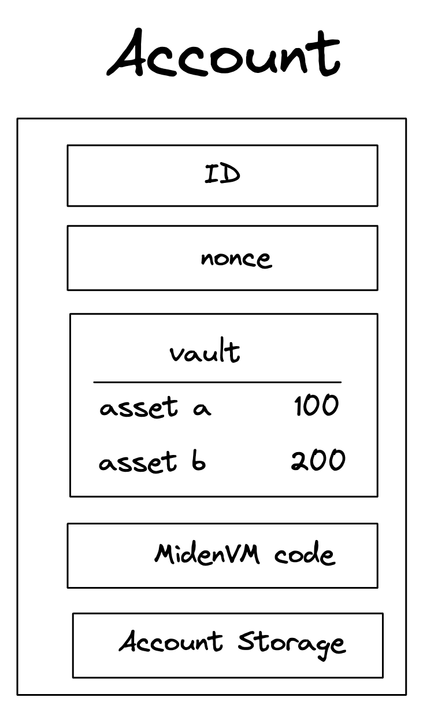

Accounts / Smart Contracts
An Account represents the primary entity of the protocol. Capable of holding assets, storing data, and executing custom code. Each Account is a specialized smart contract providing a programmable interface for interacting with its state and assets.
What is the purpose of an account?
In Miden's hybrid UTXO- and account-based model Accounts enable the creation of expressive smart contracts via a Turing-complete language.
Account core elements
An Account is composed of several core elements, illustrated below:

These elements are:
ID
An immutable and unique identifier for the
Account.
A 120-bit long number represents the Account ID. This identifier is structured to encapsulate specific account metadata while preventing precomputed attack vectors (e.g., rainbow table attacks).
The ID is generated by hashing a user-generated random seed together with commitments to the initial code and storage of the Account and the anchor block. The anchor block refers to specific blockchain epoch block in which the account is created. The resulting 256-bit long hash is then manipulated and shortened to 120-bit. Manipulation includes encoding the account type, account storage mode, the version of the Account ID scheme, and the anchor block.
Account type, storage mode, and version are included in the ID, to ensure these properties can be determined without additional computation. Anyone can immediately tell those properties by just looking at the ID in bit representation.
Also, the ID generation process ensures that an attacker cannot precompute an ID before the anchor block's commitment is available. This significantly mitigates the risk of ID hijacking, where an adversary might attempt to claim assets sent to an unregistered ID. By anchoring the ID to a recent epoch block, the window for potential attacks is minimized, reinforcing the security of asset transfers and account registration.
An Account ID is considered invalid if:
- The metadata (storage mode, type, or version) does not match any recognized values.
- The anchor epoch exceeds .
- The least significant 8 bits of the ID are nonzero.
An Account ID can be encoded in different formats:
- Bech32 (default):
- Example:
mm1qq2qlgz2reslcyqqqqfxa7836chrjcvk - Benefits:
- Built-in error detection via checksum algorithm
- Human-readable prefix indicates network type
- Less prone to transcription errors
- Structure:
- Human-readable prefix:
mm(e.g., indicates Miden Mainnet) - Separator:
1 - Data part with integrated checksum
- Human-readable prefix:
- Example:
Info
- We strongly recommend encoding account ID's using Bech32 for all user-facing applications
- Hexadecimal (debugging):
- Example:
0x140fa04a1e61fc100000126ef8f1d6 - Frequenty used encoding for blockchain addresses
- Example:
Code
A collection of functions defining the
Account’s programmable interface.
Every Miden Account is essentially a smart contract. The Code component defines the account’s functions, which can be invoked through both Note scripts and transaction scripts. Key characteristics include:
- Mutable access: Only the
Account’s own functions can modify its storage and vault. All state changes—such as updating storage slots, incrementing the nonce, or transferring assets—must occur through these functions. - Function commitment: Each function can be called by its MAST root. The root represents the underlying code tree as a 32-byte commitment. This ensures integrity, i.e., the caller calls what he expects.
- Note creation:
Accountfunctions can generate new notes.
Storage
A flexible, arbitrary data store within the
Account.
The storage is divided into a maximum of 255 indexed storage slots. Each slot can either store a 32-byte value or serve as a pointer to a key-value store with large amounts capacity.
StorageSlot::Value: Contains 32 bytes of arbitrary data.StorageSlot::Map: Contains a StorageMap, a key-value store where both keys and values are 32 bytes. The slot's value is a commitment to the entire map.
Vault
A collection of assets stored by the
Account.
Large amounts of fungible and non-fungible assets can be stored in the Accounts vault.
Nonce
A counter incremented with each state update to the
Account.
The nonce enforces ordering and prevents replay attacks. It must strictly increase with every Account state update. The increment must be less than but always greater than the previous nonce, ensuring a well-defined sequence of state changes.
If a smart contract function should be callable by other users, it must increment the Account's nonce. Otherwise, only the contract owner—i.e., the party possessing the contract's key—can execute the function.
Account lifecycle
Throughout its lifetime, an Account progresses through various phases:
- Creation and Deployment: Initialization of the
Accounton the network. - Active Operation: Continuous state updates via
Accountfunctions that modify the storage, nonce, and vault. - Termination or Deactivation: Optional, depending on the contract’s design and governance model.
Account creation
For an Account to be recognized by the network, it must exist in the account database maintained by Miden node(s).
However, a user can locally create a new Account ID before it’s recognized network-wide. The typical process might be:
- Alice generates a new
AccountID locally (according to the desiredAccounttype) using the Miden client. - The Miden client checks with a Miden node to ensure the ID does not already exist.
- Alice shares the new ID with Bob (for example, to receive assets).
- Bob executes a transaction, creating a note containing assets for Alice.
- Alice consumes Bob’s note in her own transaction to claim the asset.
- Depending on the
Account’s storage mode and transaction type, the operator receives the newAccountID and, if all conditions are met, includes it in theAccountdatabase.
Additional information
Account type
There are two main categories of Accounts in Miden: basic accounts and faucets.
-
Basic Accounts: Basic Accounts may be either mutable or immutable:
- Mutable: Code can be changed after deployment.
- Immutable: Code cannot be changed once deployed.
-
Faucets: Faucets are always immutable and can be specialized by the type of assets they issue:
Type and mutability are encoded in the two most significant bits of the Account's ID.
Account storage mode
Users can choose whether their Accounts are stored publicly or privately. The preference is encoded in the third and forth most significant bits of the Accounts ID:
-
Public
Accounts: TheAccount’s state is stored on-chain, similar to howAccounts are stored in public blockchains like Ethereum. Contracts that rely on a shared, publicly accessible state (e.g., a DEX) should be public. -
Private
Accounts: Only a commitment (hash) to theAccount’s state is stored on-chain. This mode is suitable for users who prioritize privacy or plan to store a large amount of data in theirAccount. To interact with a privateAccount, a user must have knowledge of its interface.
The storage mode is chosen during Account creation, it cannot be changed later.